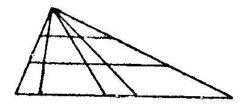

Kant: AA XVIII, Metaphysik Zweiter Theil , Seite 323 |
||||||||||
Zeile:
|
Text:
|
|
|
|||||||
| 01 | *(g Man sieht, daß dieses auf die Titel der Kategorien sich | |||||||||
| 02 | gründet: Quantität, Qualität, Relation und Modalität. ) | |||||||||
| 03 | **(g So spricht man von der Vollkommenheit einer Uhr, insofern | |||||||||
| 04 | sich das an ihr findet, was man von einer guten Uhr erwarten kann. | |||||||||
| 05 | Vollkommenheiten einer Uhr sind Eigenschaften derselben, die mit dem | |||||||||
| 06 | Begriffe einer guten Uhr übereinstimmen. — Man muß aber auch | |||||||||
| 07 | noch quantitative und qualitative Vollkommenheit von Vollkommenheit | |||||||||
| 08 | unterscheiden. ) | |||||||||
| 09 | Allgemeines. |
|||||||||
| 10 | Nr. 5664—5683: Reflexionen aus M. |
|||||||||
5664. ψ. M I. |
||||||||||
| 12 | Wissenschaft ist ein Ganzes 1. als aggregat; 2. als Reihe, Wissenschaft | |||||||||
| 13 | von den ersten principien. | |||||||||
| (s | ||||||||||
| 14 | subord. |  | coordinirte in infinitum | |||||||
| 15 | utrinqve terminirt | |||||||||
| ) | ||||||||||
5665. ψ. M I. E II 137. |
||||||||||
| 17 | Logik handekt vom Denken ohne obiect. Physic vom Erkentnis der | |||||||||
| 18 | Geg Dinge aus Erfahrung. Metaphysik von ihrem Erkentnis vor aller | |||||||||
| 19 | Erfahrung. Der Ursprung ist zwiefach: 1. wie wir dazu gekommen sind.. | |||||||||
| 20 | psychologie; 2. wie die Erkentnisse a priori moglich sind. transscendental | |||||||||
| 21 | philosophie. | |||||||||
5666. ψ. M I. E II 280. |
||||||||||
| 23 | Das Vorhergehende geht entweder der Art nach voran: principien | |||||||||
| 24 | a priori, oder dem Ursprunge nach, d.i. historisch. | |||||||||
5667. ψ. M I. E II 130. |
||||||||||
| 26 | Metaphysik ist das System der Principien aller Erkentnis a priori | |||||||||
| 27 | (g aus Begriffen ) überhaupt. | |||||||||
| [ Seite 322 ] [ Seite 324 ] [ Inhaltsverzeichnis ] |
||||||||||
;){kind=link}